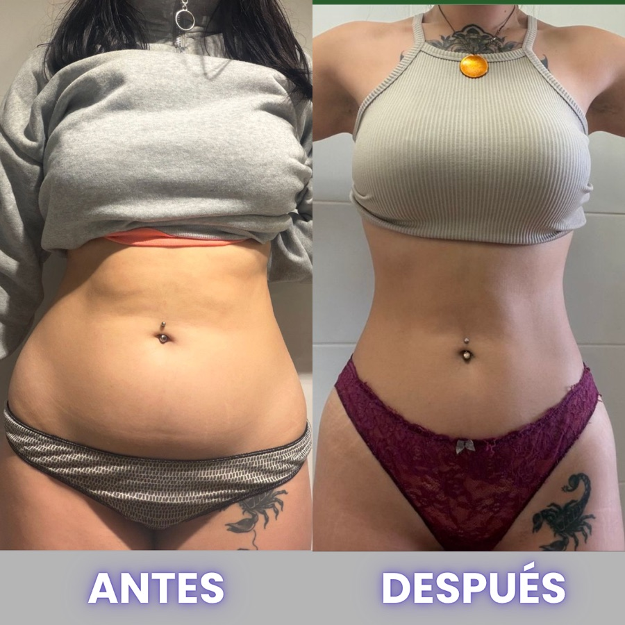

Las mejores cenas para perder grasa
Cena tu comida favorita sin hincharte y sin sentirte culpable. Cientos de mujeres pierden grasa cenando esto con nosotros.

Léeme primero
Verdad que nadie te dice: TU DÍA NO SE GANA EN EL DESAYUNO. SE GANA O SE PIERDE EN LA CENA.
Puedes hacerlo todo perfecto de 8:00 a 18:00 y tirarlo abajo en 20 minutos cuando llegas reventada, con hambre y con la cabeza frita. Ese momento, entre las 7 y las 10, es donde se cae el 90% de las mujeres. Y no es falta de voluntad: llegas ahí con el depósito de decisiones vacío después de un día entero decidiendo.
Ahora la parte que te va a gustar: no te voy a mandar a cenar lechuga triste. Aquí se cena pizza, pasta, hamburguesa... lo que te apetezca, con cabeza. Te doy las dos claves: cómo desactivar el atracón de la noche y cómo montar tu cena favorita para que juegue a favor de tu grasa, no en contra.
El protocolo de las 7 de la tarde
Cuando llegue el impulso, y va a llegar, no te pelees con él a base de fuerza. Haz esto, en orden:
PARA 2 MINUTOS Un vaso de agua y respira. El primer impulso no es hambre real: es descarga del día.
PROTEÍNA, YA Ten algo de proteína a mano (yogur natural, huevo, pavo). Corta el antojo de raíz, sin fuerza de voluntad.
CAMBIA DE ESCENA Sal de la cocina 10 minutos: ducha, paseo, lo que sea. El impulso baja solo.
 aquí va un dibujito a mano ✏️
aquí va un dibujito a mano ✏️cenas-protocolo-7pm.png
Si a las 7 tienes proteína a mano y un plan, no hay pelea. Y el capricho no se prohíbe: se disfruta después, con calma.
Tu cena en 2 mitades
Olvídate de contar calorías y de prohibirte cosas. Para cenar, monta el plato así de fácil:
 aquí va un dibujito a mano ✏️
aquí va un dibujito a mano ✏️cenas-plato-2-mitades.png
- Una mitad: proteína de verdad. Es lo que te sacia y lo que hace que no vuelvas a la nevera en una hora: pescado, huevo, pollo, marisco, carne...
- La otra mitad: lo que te apetezca. Sí. Tu pasta, tu arroz, tu pan, tus tacos. Aquí no se quita nada, se acompaña bien.
- Un toque de grasa buena para el sabor: aceite de oliva, aguacate, un poco de queso. LA COMIDA RICA TAMBIÉN ADELGAZA.
- ¿Verdura? La que te guste y como te guste. Ni obligatoria ni al vapor si no te va. Suma, no castiga.
5 cenas reales para perder grasa
Nada de tuppers tristes. Tus platos favoritos, montados para que jueguen a tu favor. TODAS EN 15 MINUTOS O MENOS.
1 · Tu pizza, pero lista para ti 🍕
Tu pizza favorita + una capa extra de proteína encima (pollo, atún, jamón, huevo). Empieza la cena con un par de bocados de proteína.
la pizza entra. el truco es que llegue acompañada ✏️2 · Pasta que no te hincha 🍝
Tu pasta de siempre con una buena ración de proteína (boloñesa de verdad, atún, gambas). Sin prisa y disfrutándola.
el plato que crees «prohibido»... y no lo es3 · Hamburguesa proteica 🍔
Carne buena, tu pan y lo que te guste dentro. Sí, hamburguesa entre semana.
antojo resuelto, sin drama ni culpa4 · Tosta-cena de 5 minutos 🥑
Pan bueno + huevo, aguacate, salmón o pavo. Para los días de «hoy no cocino».
cena de picoteo, pero que llena de verdad5 · Tacos a tu manera 🌮
Pollo o carne + tortillas + tu topping favorito. Monta, enrolla y disfruta.
cena divertida, proteica y rápidatruco de oro: deja la proteína hecha del día anterior (pollo, huevos cocidos, carne picada). cenar bien un martes reventada depende de lo que dejaste listo el lunes ✨
Cenas que sí vs. cenas que no
CENAS QUE SÍ 💚
- Tu comida favorita + proteína
- Cenar sin prisa y disfrutar
- Un capricho planificado
- Comer hasta saciarte
- Temprano y sin culpa
- Lo que te apetezca, con truco
CENAS QUE NO 🚫
- Saltarte la cena
- Picotear sin enterarte
- «Comida fit» que no llena
- Cenar de pie, corriendo
- La culpa de postre
- Modo restricción total

¿Quieres que lo hagamos juntas?
Si aplicas solo esto, tus noches cambian. Y cuando cambian tus noches, comiendo lo que te gusta, cambia tu semana entera.
Si quieres saber cómo lo hemos hecho con cientos de mujeres que estaban justo donde estás tú hoy, perdiendo grasa comiendo lo que les gusta, sin pasar hambre y sin volver a recuperarlo, escríbeme por Instagram y te lo cuento sin compromiso.
Escríbeme por Instagram 💜mándame un dm a @ashleey.fit y dime «quiero saber más»
y vamos a por tu cambio al 100%. un abrazo, Ashley ✨